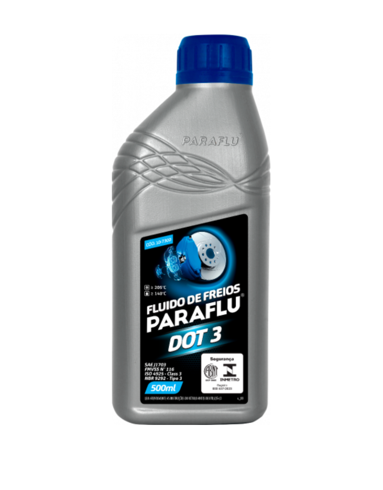
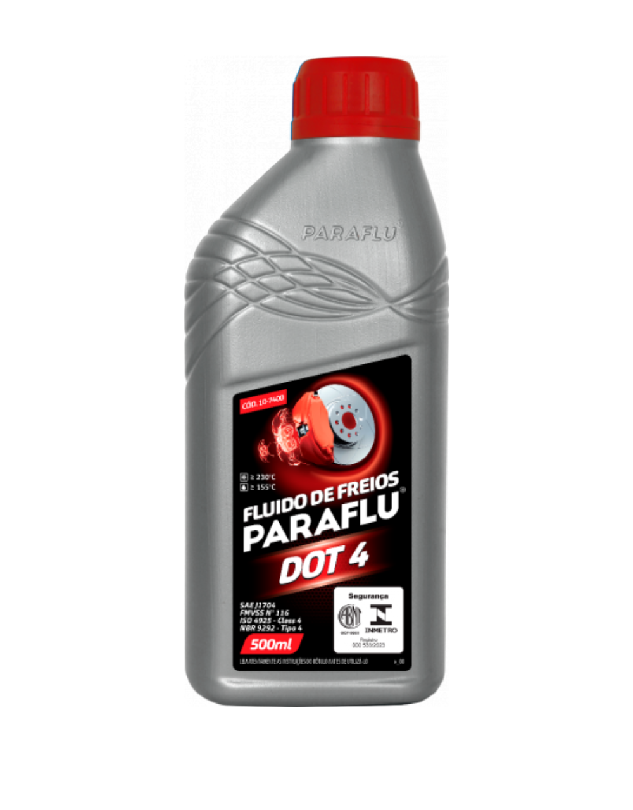
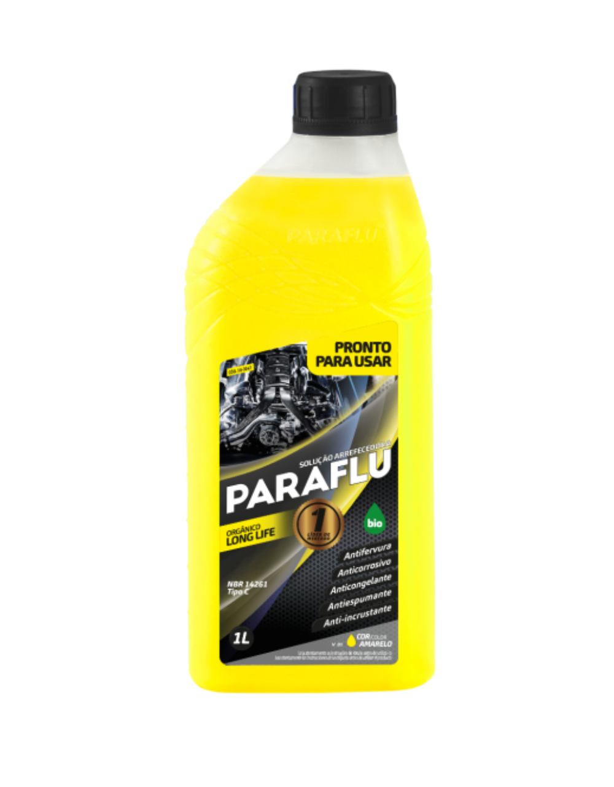

fechar


Filtros e Lubrificantes LTDA
Confira abaixo nossa linha de produtos PARAFLU.

PARAFLU DOT 3
Fluído de freio
PARAFLU DOT 3 é destinado para uso em todos os sistemas hidráulicos de freio e embreagem que recomendam o uso de um produto que atenda à especificação DOT 3.

PARAFLU DOT 4
Fluído de freio
PARAFLU DOT 4 é destinado para uso em todos os sistemas hidráulicos de freio e embreagem que recomendam o uso de um produto que atenda à especificação DOT 4.

Bio orgânico
Solução arrefecedora
Paraflu Bio Orgânico possui a tecnologia Long Life OAT (Organic Acid Tecnology), que aumenta a vida útil do motor.